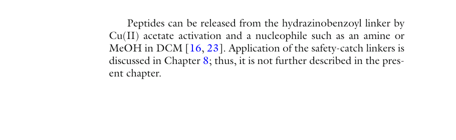

Chapter 3: Peptide Release, Side-Chain Deprotection, Work-Up, and Isolation
肽的释放、侧链脱保护、后处理与分离
Peptide Synthesis and Applications (2013, Humana) Methods in Molecular Biology, vol. 1047
原文作者：Søren L. Pedersen and Knud J. Jensen
⚠️ 来源标注：本笔记基于 Peptide Synthesis and Applications Second Edition, Methods in Molecular Biology vol. 1047, DOI: 10.1007/978-1-62703-544-6_3, © Springer Science+Business Media New York 2013. 所有内容均可在原书 Chapter 3 (pages 43-63) 查证。
在成功合成多肽之后，必须将其从固相载体上释放出来（除非用于树脂上展示）。连接子(linker)和切割混合物决定了释放后肽的C末端官能团。在大多数情况下，肽的释放与侧链保护基的去除是同时进行的。然而，某些连接子和保护基的组合允许两步操作——使用正交化学(orthogonal chemistry)或梯度酸敏性(graduated labilities)。本章描述了从最常用连接子释放多肽的实验方案，涵盖多种C末端官能团（酸、酰胺、胺、醛），并提供多肽纯度测定和储存条件的建议。
多肽的释放和保护基去除是多肽合成中的关键步骤。然而，用切割混合物处理肽-树脂时，不仅仅发生一个简单反应，而是多个同时发生的竞争性反应，可能相互干扰。必须使用合适的清除剂(scavengers)来避免不可逆的副反应。
释放和脱保护的目标是将肽从固相载体和侧链保护基中分离出来。为避免副反应，肽暴露于切割混合物的时间应尽可能短。之后通过过滤、离心和倾析将肽与树脂分离，与保护基分离。
Fmoc-SPPS的切割和脱保护策略大多基于三氟乙酸(TFA)，不同之处在于酸的浓度、清除剂种类和反应时间。
连接子的酸敏性取决于三个因素：
(1) 切割后形成的碳正离子的稳定性
(2) 离去基团的性质（如羧酸或酰胺）
(3) 空间环境
在苄基(benzyl)或二苯甲基胺(benzhydrylamine)连接子上引入甲氧基或烷氧基，可得到更高酸敏性的连接子（Wang连接子、Rink连接子），因此可在相对温和的酸性条件下切割。
三种锚定模式：
(1) 经典C末端锚定 (Classical C-terminal anchoring)
(2) 侧链锚定 (Side-chain anchoring)
(3) 骨架酰胺连接 (Backbone Amide Linkage, BAL)
Wang连接子
4-烷氧基苄醇连接子(4-alkoxybenzyl alcohol linker)，是Fmoc-SPPS合成肽酸的首选连接子。连接的酯键通常用50-100% TFA/DCM切割30-120分钟。
来源：Fields GB, Noble RL (1990) Int J Pept Protein Res 35:161-214
2-氯三苯甲基连接子 (2-Chlorotrityl linker)
形成的肽酯键可用1% TFA/DCM切割，提供完全侧链保护的肽酸。也可用于制备C末端肽胺。酸敏性可通过取代基调节：2-氯三苯甲基 < 三苯甲基 < 4-甲基三苯甲基 < 4-甲氧基三苯甲基（酸敏性依次增加）。
来源：Barlos K et al. (1989) Tetrahedron Lett 30:3947; Eleftheriou S et al. (1999) Tetrahedron Lett 40:2825
Rink Amide连接子
提供C末端肽酰胺，用10-95% TFA/DCM切割。推荐使用三烷基硅烷清除碳正离子。
来源：Rink H (1987) Tetrahedron Lett 28:3787-3790
Rink Acid连接子
提供肽酸，可被低至0.2% TFA/DCM切割，得到完全侧链保护的肽酸。
HMBA连接子 (4-Hydroxymethylbenzoic acid)
通用但使用较少的连接子。通过改变切割所用亲核试剂，可获得多种C末端修饰的肽：
• 一级酰胺：NH3/甲醇 → 来源：Story SC, Aldrich JV (1992) Int J Pept Protein Res 39:87
• 酰肱：5% NH2NH2/DMF → 来源：Abd-Elgaliel WR et al. (2007) J Pept Sci 13:487
• 酸：0.1 M NaOH水溶液 → 来源：Minkwitz R, Meldal M (2005) QSAR Comb Sci 24:343
• 甲酯：5% DIEA, 5% MeOH/DMF, 50°C → 来源：Hutchins SM, Chapman KT (1996) Tetrahedron Lett 37:4869
来源：Atherton E et al. (1979) Bioorg Chem 8:351-370
Figure 1. HMBA连接子通过不同亲核试剂裂解可获得的C末端官能团

Source: Original Figure 1, page 48 (© Springer 2013)
蛋白源氨基酸大多是双官能团或三官能团的，某些非蛋白源氨基酸甚至含四个官能团。大多数三官能团氨基酸在SPPS中需要侧链保护基。
各氨基酸的特殊注意事项：
• 甲硫氨酸(Met)：易被氧化为甲硫氨酸亚砖(Met sulfoxide)。可用DTT和N-差基乙酰胺还原，或在切割时使用EDT + TMS-Br还原。DODT（无恶臭）是EDT的良好替代硫醇。切割时应在氮气或氩气下进行。 来源：(1) Beck W, Jung G (1994) Lett Pept Sci 1:31; (2) Teixeira A et al. (2002) Protein Pept Lett 9:379
• 半胱氨酸(Cys)：易形成分子内二硫键（环肽）或分子间二硫键（寡聚体）。如果只有一个Cys，2.5% TES/TFA通常足以保持硫醇还原态。 来源：Guillier F et al. (2000) Chem Rev 100:2091
• 色氨酸(Trp)：可被氧化和烷基化。Trp的修饰通常不可逆。使用Boc作为Trp保护基可将氧化和烷基化降至最低。 来源：同上
• 组氨酸(His)和酪氨酸(Tyr)：可被烷基化，机制同Trp。
• N末端谷氨酰胺(Gln)：在酸性条件下可环化形成焦谷氨酸(pyroGlu)。应避免N末端Gln残基。
常用切割混合物：
| 试剂名称 | 配方 | 切割时间 |
|---|---|---|
| Reagent B | TFA/phenol/H2O/TES (88/5/5/2) | 1-4 h |
| Reagent K | TFA/phenol/H2O/thioanisole/EDT (82.5/5/5/5/2.5) | 1-4 h |
| Reagent L | TFA/DTT/H2O/TES (88/5/5/2) | 1-4 h |
| Reagent R | TFA/thioanisole/EDT/anisole (90/5/3/2) | 1-4 h |
| 标准(最常用) | TFA/TES/H2O (95/2.5/2.5) | 1-4 h |
| 含Cys/Met/Arg | TFA/TES/EDT/H2O (92.5/2.5/2.5/2.5) | 1-4 h |
| 无恶臭替代 | TFA/DODT (95/5) | 2-3 h |
选择指南： • 标准序列（无或少量Cys/Met）：TFA/TES/H2O (95/2.5/2.5) • 含多个Cys(Trt)、Met或Arg(Pbf)残基：TFA/TES/EDT/H2O (92.5/2.5/2.5/2.5) 或 TFA/DODT (95/5) • 特殊困难序列：Reagent K 或 Reagent R • 建议：大规模切割前先做mini-cleavage验证 来源：原书 Table 3, page 51; Guy CA, Fields GB (1997) pp 67-83
后处理流程： 1. 过滤收集TFA-肽混合物，用TFA洗树脂 2. 氮气流浓缩至约1 mL 3. 加入15 mL冰冷乙醚沉淀肽 4. 3000×g离心5分钟 5. 倾析乙醚，洗2次 6. 溽于水-乙腈腈(1:5)，冻干保存 来源：原书 pages 50-51
溽解策略（按优先级）： 1. 水（可加少量醋酸辅助） 2. 乙腈腈/水混合（增加疏水肽溽解度） 3. 醋酸（可达50%）+ 乙腈腈 + 超声 4. 少量DMF或DMSO（高沸点，后续难去除） 5. 碱性肽：用醋酸溽解 6. 酸性肽：用碳酸氢钠缓冲液溽解 7. 大肽：用盐酸胍或尿素（破坏二级结构） 来源：原书 page 52
• 标准流动相：乙腈腈 + 水（含0.1%甲酸） - TFA会导致MS离子化抑制，LC-MS中用甲酸替代 • 色谱柱选择：C18（小到中等亲水肽）；C4/C8（中等到大疏水肽） • 粒径影响分离度，孔径影响表面积和载量 • 检测波长：酰胺骨架~215 nm；Tyr/Phe/Trp ~254 nm 来源：原书 pages 52-53
来源：原书 pages 52-53
原书Table 4（pages 54-57）列出了80+种常见修饰及其质量变化。以下列出最重要的条目：
| ΔMass (Da) | 修饰 | 预防措施 |
|---|---|---|
| -98 | H3PO4丢失 | pSer/pThr肽MS中的伪影 |
| -80 | 去磷酸化 | 避免磷酸肽长时间存于酸性水溶 |
| -34 | Cys→脱氢丙氨酸(Dha) | — |
| -32 | Cys→羊毛硫氨酸(lanthionine) | — |
| -18 | 脱水/焦谷氨酸/天冬酰胴胺 | Asp后用Fmoc-Asp(OtBu)-(Dmb)Gly-OH |
| -17 | Gln→吡咽烷酮(PyGlu) | 避免N末端Gln |
| -16 | H-磷酸酯形成(磷酸肽) | 用苄基保护磷酰胺基 |
| -13 | pSer/pThr→哌啦丁基丙氨酸 | 避免Fmoc去除时使用微波 |
| -2 | Cys二硫键形成 | — |
| +1 | Asn/Gln脱氨→Asp/Glu | 避免肽长时间置于水相 |
| +2 | Cys还原/Trp吲咽双键还原 | 用Fmoc-Trp(Boc)-OH，避免使用TES |
| +12 | Cys→硫代脆氨酸/甲醛加成物 | 醋酸中甲醛污染 |
| +14 | 甲酯/酰肱形成 | 确保切割前树脂不含甲醇 |
| +16 | Met→亚砖氧化 | 氮气保护，加EDT/DODT |
| +48 | Cys→半胱氨酸亚砑酸 | — |
| +51 | C末端Cys→β-哌啦丁基丙氨酸 | 用三苯甲基连接子 |
| +56 | tBu加成物(Cys/Met/Trp/Tyr) | 加足量清除剂 |
| +80 | Pbf/Pmc磺化(Arg/Ser/Thr) | 用TMS-Br/thioanisole/EDT/TFA重新切割 |
| +96 | TFA加成物 | 用0.1 M碳酸氢钠处理 |
| +252 | Pbf加成物 | 加足量清除剂 |
| +242 | Trt加成物 | 加足量清除剂 |
来源：原书 Table 4, pages 54-57. 完整表格包含80+条目。
长期储存建议： 1. 最佳：将肽保留在固相载体上（未切割状态） 2. 已脱保护肽：冻干后以粉末形式储存于-80°C 3. 如需溶液储存：用微酸性溶液，-80°C冻存 4. 避免残留TFA：可导致酸敏肽键（如Asp-Pro）水解、Gln/Asn脱氨 来源：原书 page 53
以下所有方案均针对0.1 mmol规模。来源：原书 pages 58-62
操作步骤（0.1 mmol）： 1. 将树脂放入带聚丙烷滤膜的注射器中 2. 依次用DMF洗3次、DCM洗3次（最后必须是DCM） 3. 高真空干燥至少4小时 4. 加入5 mL切割液A (95% TFA, 2.5% TES, 2.5% H2O) 或切割液B (95% TFA, 5% DODT) 5. 室温反应2小时 6. 过滤收集TFA-肽混合物 7. 用3 mL TFA洗树脂2次，合并滤液 8. 氮气流浓缩至约1 mL 9. 加入15 mL冰冷乙醚 10. 3000×g离心5分钟 11. 倾析乙醚，用冷乙醚洗2次 12. 溽于乙腈腈-水(1:5, 10 mL)，冻干 来源：原书 Protocol 3.1, page 58
适用于酸敏连接子：Rink Acid、2-氯三苯甲基、SASRIN、Sieber树脂 切割液C：1% TFA, 3% TES, 96% DCM 重复切割3次，用冷水沉淀完全保护的肽。 来源：原书 Protocol 3.2, page 59
HMBA连接子是酸稳定的，可先用TFA去除侧链保护基，再用亲核试剂释放肽。通过改变亲核试剂可获得： • 肽酰胺：7N NH3/MeOH • 肽酰肱：5% NH2NH2/DMF • 肽酸：0.1 M NaOH（仅适用于水兼容树脂如PEGA） • 肽甲酯：5% DIEA, 5% MeOH/DMF, 50°C, 20h • 肽醇：NaBH4/50%乙醇水溶液（仅适用于水兼容树脂） 来源：原书 Protocol 3.3.1-3.3.5, pages 59-62
1. 切割是多步同时发生的反应，清除剂的选择至关重要。 2. 连接子选择决定C末端官能团： • Wang/Rink Acid → 肽酸 • Rink Amide → 肽酰胺 • 2-氯三苯甲基 → 肽酸/胺（可保留保护基） • HMBA → 酸/酰胺/酰肱/醇/酯（最灵活） • o-BAL → 醛/硫酯/酸（高级应用） 3. 标准切割液：TFA/TES/H2O (95/2.5/2.5) 适用于大多数序列 • 含多Cys/Met/Arg：加EDT或DODT • 困难序列：Reagent K或R 4. 副产物鉴定：原书Table 4提供了80+种常见修饰的质量偏移列表 5. 储存：最好保留在树脂上（未切割），冻干粉末-80°C 6. 严格建议：大规模切割前必须做mini-cleavage验证
1. 硫醇类有毒且有恶臭。制备切割混合物和切割反应必须在通风良好的通风橱中进行。建议用50%漂白液浸泡所有玻璃器皿。 来源：原书 Note 1, page 62
2. 如果肽-树脂在此切割步骤前未充分干燥，可能得到肽酸作为副产物。 来源：原书 Note 2, page 62
3. 肽与NaCl一起冻干，需在制备HPLC或凝胶过滤中去除。 来源：原书 Note 3, page 62
本章引用30篇参考文献，完整文献列表见原书pages 62-63。关键文献：
Fields GB, Noble RL (1990) Int J Pept Protein Res 35:161-214 [Wang连接子]
Rink H (1987) Tetrahedron Lett 28:3787-3790 [Rink Amide连接子]
Barlos K et al. (1989) Tetrahedron Lett 30:3947-3950 [2-氯三苯甲基连接子]
Teixeira A et al. (2002) Protein Pept Lett 9:379-385 [DODT无恶臭清除剂]
Boas U et al. (2009) Chem Rev 109:2092-2118 [BAL策略综述]
Guy CA, Fields GB (1997) pp 67-83 [TFA切割与脱保护综述]